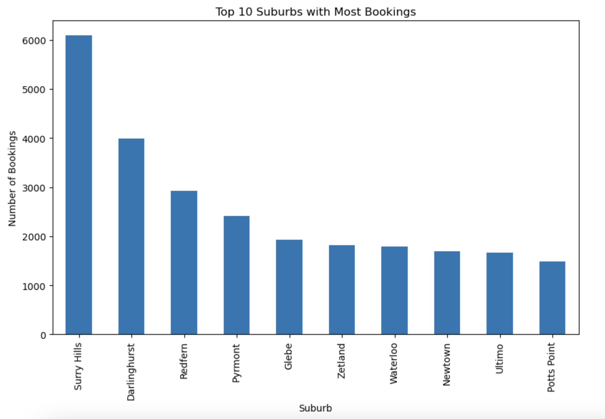
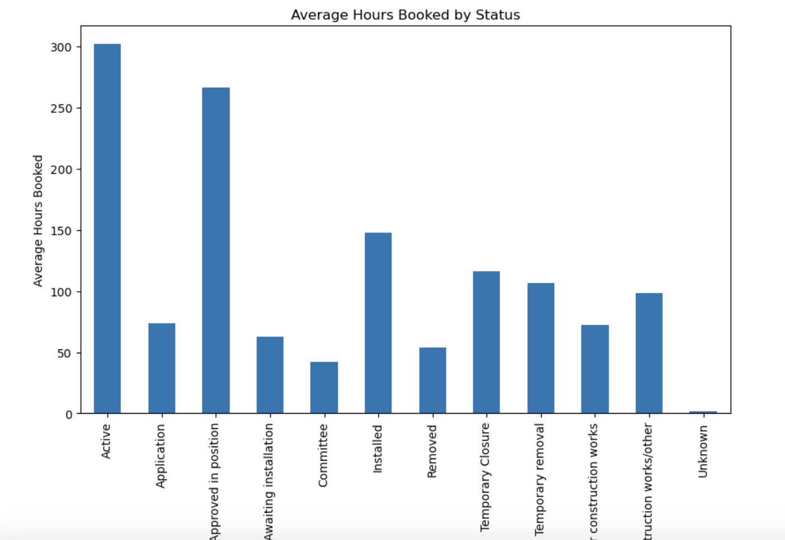
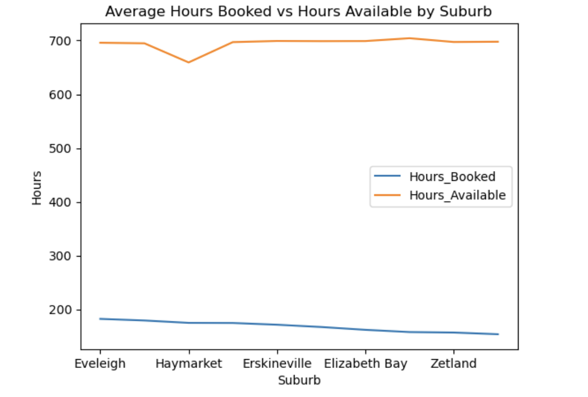

This graph shows the average of hours booked between ten different suburbs. Eveleigh has recorded 175 hours, which is followed by Sydney at 172 hours with some of the wonderful others being Haymarket and Rosebery. The mean findings indicate that the booking durations have been constant in all the marked suburbs.
The graph used demonstrates that suburb hours are uniform in terms of quantity and average hours booked. Eveleigh and Sydney are leading slightly at nearly 175 hours, while other suburbs include Haymarket, and Rosebery and many others. The above trend shows the kind of booking durations that have been made in all the areas of operation.
That is evident from the operator bookings depicted in the graph where, GoGet stood out at over 30,000. This is closely followed by other operators such as Car Next Door and Flexicar Hertz with less activity with Popcar and Uber Carshare barely apparent.
If we focus on the average hours booked, then the graph represents the ‘Status’ where ‘Active’ took over 300 hours, followed by ‘Approved in Position’ and ‘Installed’. Application of lower averages is found for the pending statuses such as “Application” and “Unknown” due to less usage.
From 2019 to 2022, the required hours can be seen to have some variations represented on the graph below. A mid-2020 dip is followed by peaks above 220 hours in 2021. Nevertheless, the variation stabilizes over time and this can be an effect of seasonality or some outside influence.
The latter compares booked and available hours by suburb and shows substantial under-booking. Available hours are always over 700 while the booked hours lie below 200 across the suburban precincts such as Stubbs and Bathurstr, Eveleigh, Haymarket and Zetland that could probably be utilised to the full.
